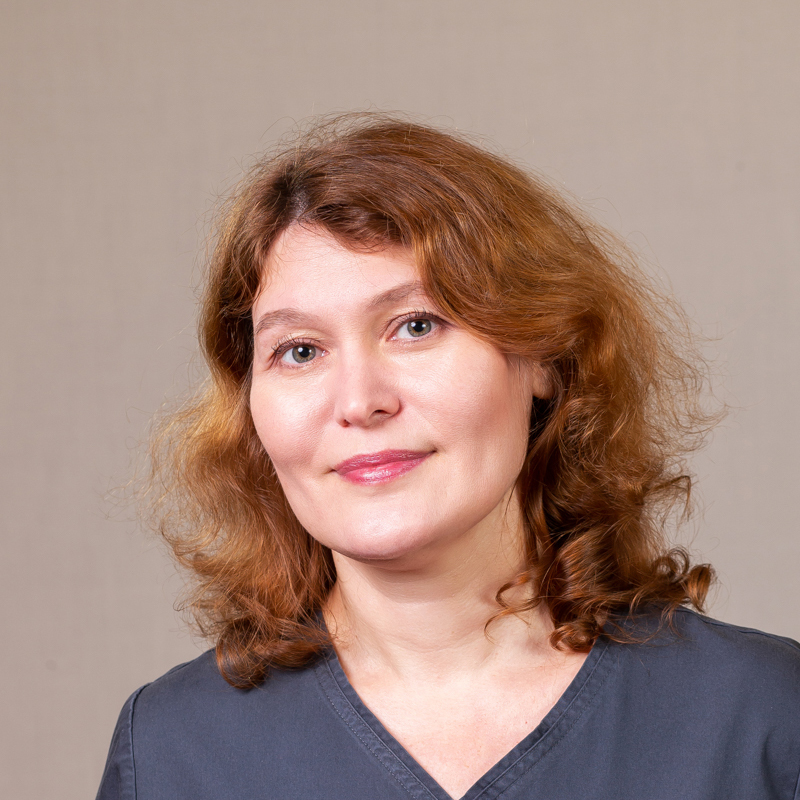

Точная ультразвуковая диагностика
Эффективный метод обследования без противопоказаний
Мгновенный результат
в день обследования
от 2000 рублей
стоимость одной процедуры
100% гарантия
точности заключения врача
20 лет
минимальный стаж УЗ-диагноста
Чем грозит неточное УЗИ
Результат ультразвукового исследования — это отправной пункт для лечащего врача. От того, насколько качественно сделано УЗИ, зависит здоровье и жизнь пациента.
Время уходит, болезнь прогрессирует
Неточное УЗИ может направить врача не по тому пути: начнутся обследования не тех органов, что отнимет драгоценное время. Бывали случаи, когда камень в желчном пузыре принимали за камень в почке. Пока лечащий врач тратил время на подтверждение неверного диагноза, болезнь переходила в новую стадию, когда камень перекрывал желчевыводящие пути и вызывал сильнейшую боль. Правильный диагноз помог бы своевременно провести операцию и не доводить пациента до страданий.
Хуже, если обследование совсем не показывает признаков заболевания. Такое бывает, когда врач-диагност неопытен или оборудование устаревшее. А если врач не увидел повода бить тревогу, то и дополнительные обследования, как и лечение, просто не начинаются. И если не все болезни смертельны, то на качестве жизни сказываются все.
Важные детали упущены
Особенно важно быстро и точно выявлять отклонения в акушерстве. На ранних сроках беременности важно увидеть признаки заболеваний внутренних органов плода, болезнь Дауна и другие хромосомные нарушения. Оптимальный срок для УЗИ – 12–13 недель. Именно в этот период относительно легко обнаруживаются аномалии развития. Однако, есть отклонения, которые обнаружить не так просто. Например, порок сердца у плода — его сложно увидеть при обследовании на старом аппарате с плохой визуализацией или ограниченными функциями.
Без информации о возможных рисках у будущей мамы нет шанса верно оценить ситуацию и предпринять необходимые меры.
Каждая жизнь — это история.
Генезис — тысячи счастливых историй
Как мы повышаем точность УЗ-диагностики
На точность заключения диагноста влияют разные факторы: какой врач и каким аппаратом сканирует пациента, насколько пациент подготовлен к процедуре, какого он телосложения. От врача зависит далеко не все. В частности, мы не можем повлиять на положение плода в матке, которое иногда не позволяет получить достоверную картину. Но во всем, на что мы можем повлиять, мы придерживаемся высоких стандартов.
20 лет минимальный стаж УЗ-диагноста в «Генезисе»
Используем аппараты экспертного класса
Аппарат, с помощью которого проводится сканирование, должен быть современным и соответствовать профилю обследования. В профильных аппаратах установлены углубленные программы для изучения конкретной области.
В акушерстве мы используем аппарат Volusone8, в котором есть готовые настройки для обследования сердца, мозга, сосудов малыша с учетом особенностей плода. Например, сердце у малыша работает со скоростью 140-170 ударов в минуту. У взрослого показатели иные, «взрослая» кардиопрограмма здесь не подойдет.
На современных аппаратах установлены матричные датчики. Они позволяют измерить параметры плода, недавно вошедших в обязательные стандарты. На старом оборудовании не получится сделать снимок носовой кости, толщины воротникового пространства по стандартам ISUOG. Благодаря матричным датчикам, более качественными стали и остальные обследования: почек, щитовидной железы.
Дополнительные возможности для диагностики дает 3D-изображение, то есть трехмерный снимок нужной области: сердца, мозга, образований. На современном оборудовании можно работать с изображением, отпустив пациента. Такой снимок можно отправить коллегам, ведущим специалистам, которые смогут подробно его изучить на своих аппаратах. Именно функция 3D дает родителям возможность увидеть ребенка еще до его появления на свет.
Чтобы обследовать плод, мы используем оборудование экспертного класса. Аппараты компании GE Voluson считаются лучшими в мире.
Обращаемся к опытным врачам
Каким бы продвинутым ни был аппарат, он не может сам сделать корректные срезы. Это задача для опытного врача. Минимальный стаж работы по специальности наших УЗ-диагностов — 20 лет.
Но просто принимать пациентов недостаточно: компетентность врача начинается с активной практики и подкрепляется научной деятельностью.
Петрова Елена Валерьевна и Пуйда Сергей Адольфович — наши ведущие врачи-диагносты в акушерстве. Они работали в медико-генетических центрах и имеют обширный опыт распознавания пороков и хромосомных аномалий.
Елена Валерьевна и Сергей Адольфович имеют научную степень, они оба — кандидаты медицинских наук. Доктор Сергей Пуйда преподает на кафедре лучевой диагностики педиатрического университета УЗД. Случаи из его практики включены в учебники ультразвуковой пренатальной диагностики.
Даем четкие инструкции пациентам
Врач подробно объясняет пациенту, как подготовиться к обследованию, чтобы получить наиболее точный результат: разные типы обследования требуют различной подготовки, в основном это касается питания.
Если УЗ-диагност не уверен в качестве проведенного сканирования, он назначит дополнительные исследования.
Как мы работаем
1
Вы оставляете заявку или звоните
2
Мы записываем вас на прием
3
Вы приезжаете в назначенное время
4
Проходим обследование
5
Вы получаете 100% результат
Стоимость консультации врача
| Код | Наименование услуги | Стоимость, руб | |
|---|---|---|---|
| 2.1.1 | УЗИ-скрининг первого триместра (одноплодная беременность) | 4000 руб | Заказать |
| 2.1.1.2 | УЗИ-скрининг первого триместра (кандидат медицинских наук) | 6000 руб | Заказать |
| 2.1.1.1 | УЗИ-скрининг первого триместра (одноплодная беременность)(экспертный) | 7800 руб | Заказать |
Отзывы
Почитайте отзывы о работе наших специалистов, чтобы понять: люди, написавшие благодарность, мучились такими же сомнениями, были не уверены в результате. Однако желание обрести долгожданное счастье заставило их бороться до конца.
Виктория Алексеенко
2019-12-12
Была первый раз на приему у этого врача. Что хочу сказать с первого взгляда очень компонентный врач , сразу всё увидела , ответила на все мои вопросы . Сказала что делать , побольше бы таких врачей. Внушает доверие. Я была у многих врачей и скажу что этого врача я бы порекомендовала.
Екатерина Терехова
2019-12-12
Обращаюсь к Юлии Викторовне второй раз. В первый раз я была у нее,когда еще не было Генезиса. В Генезис в этот раз я шла именно на нее. Очень нравится отношение к пациенту. Все очень доходчиво объясняется. Все процедуры делаются предельно аккуратно. Такому врачу хочется довериться и доверять ему безоговорочно легко и просто.Доброжелательное отношение к пациентам везде: и на входе у рецепшн, и в процедурах кабинетах. Спасибо, в следующий раз я снова к Юлии Викторовне )
Анна Арефьева
2019-11-28
Врач очень внимательная, доброжелательно настроена. Дала рекомендации, которым я решила последовать. Приду на прием к этому врачу обязательно снова на диагностическую процедуру.
Нас признали лучшими в сфере ВРТ в Санкт-Петербурге:
 Хрустальная пробирка 2011
Хрустальная пробирка 2011
Российская национальная премия "Хрустальная пробирка": Лучшая клиника региона Северо-Западный федеральный округ, Санкт-Петербург.
 Хрустальная пробирка 2012
Хрустальная пробирка 2012
Российская национальная премия "Хрустальная пробирка": Лучшая клиника Санкт-Петербурга в области ВРТ
 RBA 2012
RBA 2012
Russian beauty award: Лучший специализированный медицинский центр г. Санкт-Петербург
Наши врачи
Пуйда Сергей Адольфович Врач УЗ-диагностики

Мина Лариса Геннадьевна Врач УЗ-диагностики